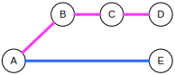
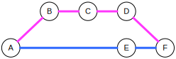
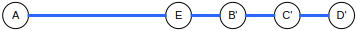
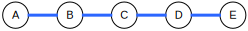
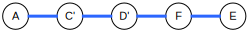

Go with the Gitflow!
A workshop in Gitflow & Git best practices
Today
- Introduction (20min)
- GitFlow (30min)
- Hands on with GitFlow (1hr)
- Li'l break
- Git mastery & best practices (30min)
- Hands on with advanced Git (1.5hr)
- Wrap-up (15min)
Hi, my name is
...
and our current worfklow sucks because
...
GitFlow
Gitflow @ Digitpaint
- Fast identification of issues
- Higher quality code
- Clear code ownership and responsibilities
- No push'n'run and less uncontrolled conflicts
- Easier coleague onboarding

(c) Vincent Driessen, Creative Commons BY-SA, http://nvie.com/posts/a-successful-git-branching-model/
Branches
- Develop
- Master
- Feature
- Release
- Hotfix
- [Integration]
Master
- Is reflection of production
- Only contains merge commits
- Every change must be merged back to develop
Develop
- The future for your releases
- Contains mostly merge commits (some small fixes)
- Receives merges from feature/integration branches
Feature branches
- Where work is done
- Branch from develop/integration
- Merge no-ff into develop/integration
- Must be cleaned and up-to-date before merge
Release branches
- Where releases are prepared
- No new features
- Branch from develop
- Merge no-ff into master
- Are optional
Hotfix branches
- Urgent fixes for production
- No new features!
- Branch from master
- Merge no-ff into master
Integration branches
- Temporary copies of develop
- Long running features
- Branch from develop
- Merge no-ff into develop
The Workflow
Hands on!
https://digitpaint.github.io/gitflow/
- Features
- Releases
- Hotfixes
Break
Tending history
- It's a communication tool
- Saves future you/colleagues time
- See why things changed
Commits
- Must be atomic
- The message must tell us why
Atomicity
- Only contain related changes
- Must keep the repository in a working state
A bad commit
- Add unittest for house.json
- Fix typo in car.js*
*Like walking into your house with a turd on your shoe
Commit messages
- All lines wrap at 72 characters
- First line is the subject
- Followed by empty line
- Followed by body (optional)
Bad
Fixing thingsGood
Validate URL passed to loader
The loader now validates the first argument
as an URL as this led to faulty data input in
the database.
Edge cases
- Whitespace changes
- Renames
WIP commits
!! Only on feature branches !!
- Do whatever you like
- Split up before merging
Pull requests
-
Makes QA easy
- Code Review
- Continous Integration
- Makes mergin and managing feature branches easier
PR history
- Clean up the history before creating/updating a PR
- No fix commits for code that was written in this feature.
- No unrelated changes (do these on develop or other feature branches)
WIP PR
- Prefix title with [WIP]
- Never merge before it's unwipped
Rebasing



Update features
git rebase developDealing with conflicts
- Check
git status - Fix conflict
git addconflicted filegit rebase --continue
Skip & Abort
git rebase --skipgit rebase --abortPush rebased
Always do this with care!
git push -fPull rebased
Just take everything from remote:
git reset --hard origin/BRANCHNAMEor rebase with remote
git pull --rebaseRewrite history
... a.k.a. interactive rebasing


git rebase -i PARENT_SHA1
Actions
- Edit commit message (reword)
- Edit/split commit (edit)
- Combine two commits (squash / fixup)
- Remove commits (just remove the line)
- Reorder commits (move the lines around)
Splitting commits
- Undo the commit so we can change the index
- Create new commits
- git rebase --continue
Hands on!
https://digitpaint.github.io/gitflow/
- Pull requests
- Rebasing
Wrap-up
Giflow
- Master = current release
- Develop = future release
- Feature = PR = where code is written
- Release = code freeze, deploy to staging, merge to master
- Hotfix = feature + release cominbation
- Integration = long-running features
History
- Keep it clean and readable
- Non-ff merge to keep branches separated
- Create atomic well messaged commits
Feature PR's
- Use for CI, review and management
- Keep them clean using interactive rebasing
Rebasing
- Applies chain of commits on top of new parent
- Allows to edit commits during the creation of these new commits
- Must force push
- Use with caution on shared branches
zegt...